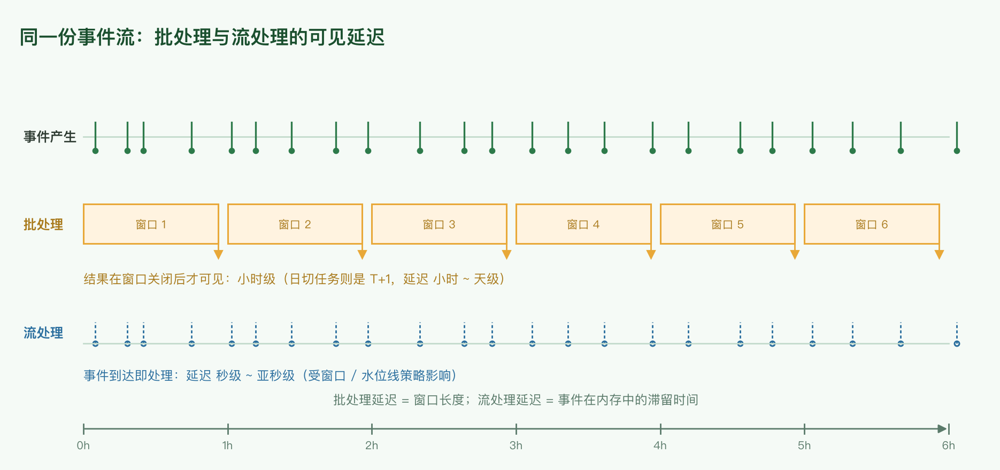
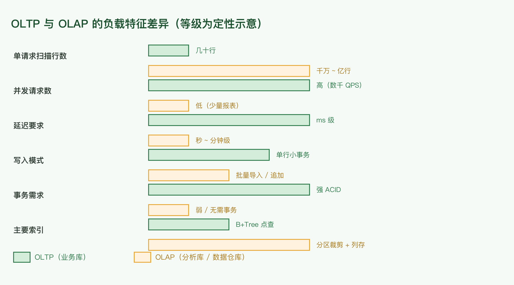
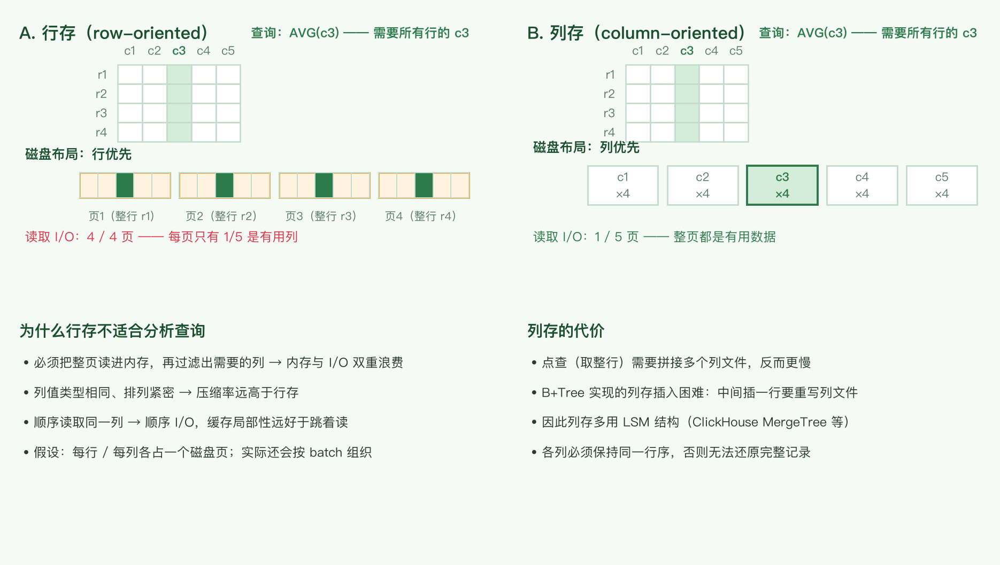

← 返回索引
📊 数据处理与 OLAP
组件选型三篇之三：数据怎么处理（批 / 流）、分析型存储怎么选（列存 / 数仓 / ETL）。缓存见 缓存与消息队列选型，存储选型见 数据存储选型。
1. 批处理 vs 流处理
这里的「流处理」指实时处理。
| 批处理（Batch） | 流处理（Stream） |
|---|
| 触发方式 | 定时调度（日切 / 小时级） | 事件到达即触发 |
| 延迟 | 分钟 ~ 小时 ~ 天级 | 秒级 ~ 亚秒级 |
| 输入 | 有界数据集（文件、S3 前缀、表快照） | 无界事件流 |
| 正确性 | 可重跑、易对账 | 需水位线 / 窗口语义处理乱序 |
| 典型实现 | Hadoop、Spark、（内部）Cradle（批量调度平台） | Flink、Kinesis + Lambda、（内部）Datapath（流式数据处理平台） |
| 其他例子 | DataPipe Line（内部数据管道平台） | DDB Stream（表级变更流） |

同一份事件流：批处理延迟 = 窗口长度；流处理延迟 = 事件在内存中的滞留时间
核心结论：要用
不同的 data store + 不同的处理方式（batch / stream）解决不同规模、不同实时性的问题。
- DynamoDB 不适合做 scan query，尤其是亿级数据量——这是设计约束，不是性能调优问题。
- 但同样亿级的数据，离线的 S3 + Spark 处理起来就很简单。
所以同一个业务里「在线点查走 DDB + 离线全量分析走 S3/Spark」是完全正常的组合，缺的只是把它们接起来的那条管道。
Lambda 架构 vs Kappa 架构
flowchart TB
subgraph LAMBDA["Lambda 架构：批 + 流双路"]
direction TB
E1[事件流] --> B1[批处理层
全量重算 · 保证正确]
E1 --> S1[速度层
增量处理 · 保证时效]
B1 --> V1[(服务层
合并两路视图)]
S1 --> V1
end
subgraph KAPPA["Kappa 架构：单流路"]
direction TB
E2[事件流 / 可重放日志] --> P2[单条流处理路径]
P2 --> V2[(结果存储)]
end
classDef batch fill:#e3f2fd,stroke:#2196f3
classDef speed fill:#fff3e0,stroke:#ff9800
classDef sink fill:#d4edda,stroke:#2d7a4a,font-weight:bold
class B1 batch
class S1 speed
class V1,P2,V2 sink
原文提到「Kinesis + Lambda，Lambda 这种触发的方式可以构成一个流式处理」——这里要区分两个同名的 Lambda：
- AWS Lambda：一个函数计算服务，事件触发即可当流处理的执行单元。
- Lambda 架构（Nathan Marz）：批处理层 + 速度层 + 服务层，批层保证正确性、速度层保证实时性，代价是两套代码要维护同一份逻辑。
- Kappa 架构：只保留流处理一条路径，需要重算历史时重放日志；代价是重放成本与对日志保留时长的要求。
2. 存储引擎的两个类型：OLTP 与 OLAP
事务处理（OLTP）
平时的业务处理——更新数据库等，系统中的主要请求类型。访问模式通常是返回一个或多个记录的所有字段并更新某些列，或插入几行新记录。大多数与用户交互的应用都是这种模式。
分析处理（OLAP）
业务上很少用到，主要用于支撑业务决策，请求量少。访问模式是读取巨量记录的某些字段，然后做聚合运算（count / sum / average）。

等级为定性示意：OLTP 是「多并发 • 少行 • 全列 • ms 级」，OLAP 是「少并发 • 海量行 • 少列 • 秒级」
共同点
两者都使用 SQL 接口。这也是很多选型错误的来源：SQL 一样，但底层数据组织方式必须不同——把分析查询放到业务库上跑，会在引擎层被惩罚。
3. 分析处理的解决方案：数据仓库
为什么需要专门的 data warehousing
- 通常的 OLTP 直接与用户业务相互影响，而分析处理要读取海量记录；直接跑在 OLTP 上会影响线上性能。因此用专门的 data warehouse 承担分析处理——通常通过 ETL 把关系数据库的数据导入数仓，所以数仓是只读数据的副本。
- 由于业务库与数仓的数据访问方式不同，可以采用不同的底层优化技术。例如索引结构在数据仓库中不常见，而基于列的存储可以极大提升分析处理的效率。
基于列的存储（列式存储）
- 在分析处理的应用中，很少出现
SELECT * 这样的需求。
- 传统基于行的数据库，一行的不同属性放在相邻位置，相邻的行也放在磁盘上一起。
- 由于数仓的访问特性（读取大量记录但只读某些列），行式存放不再合适：按行存储必须先读入所有这些行的所有列（占据大量内存）然后再过滤。列式存储把所有记录的某一列放在一起，省掉了这个过程。Amazon Redshift 在使用列式存储时性能提升很多，就是这个原因。
- 除此之外，同一列的数据类型一致、排列紧密，很容易做压缩（字典编码、RLE、delta 编码等）。
- 注意：列存储必须保证每一列的行序一致，否则无法还原一条完整记录。
- 列存储也可以让某些列按序存放，但依然要保证各列对应同一行序——这样才能更好地支持压缩与 range query。
- 基于 B+Tree 实现的列存储对写很不友好：在中间插入一行意味着重写整个列数据文件；基于 LSM 的实现没有这个问题（对比见 数据存储选型 — 宽列 / 列族）。

查询 AVG(c3)：行存要读全部 4 页，列存只需读 1 页（假设每行 / 每列各占一页）
Materialized aggregates
某些聚合结果会被多个 query 复用。为了提升性能，可以把这些聚合结果物化——本质上就是写到磁盘上。
原文观点：OLTP 上一般不实现这个，因为一旦发生写，materialized view 需要重新计算，对 OLTP 的数据量来说性能不行。
补充：该结论在「全量重算」的前提下成立。现在的增量物化视图已把代价降下来——ClickHouse 的 materialized view 在写入时增量更新，PostgreSQL 也有 pg_ivm 这类扩展。因此「需要聚合视图」不再是 OLAP 专属的结论，关键仍是写入频率与查询频率的比值。
Data cube
Data cube 是一种特殊的 materialized view：按照某个维度做聚合（如「按天 × 按地区 × 按品类」的销量）。维度组合数随维度数指数增长：
$$N_{cuboids} = 2^{n}$$
因此实践上只物化被查询最多的那几组维度。
4. ETL 与数据仓库
ETL 是 Extract-Transform-Load 的缩写，描述将数据从来源端经过抽取（extract）→ 转换（transform）→ 加载（load）到目的端的过程。ETL 一词较常用在数据仓库，但其对象并不限于数据仓库。
这个工具做的更多是：把不同数据源的数据经过抽取 / 转换 / 加载，统一到满足同一数据格式的目的端。例如数据仓库需要把不同数据源汇集到一起，用于某种查询。
flowchart LR
S1[(业务库
MySQL / DDB)] --> E[Extract]
S2[(日志 / 埋点
S3 / Kafka)] --> E
S3[(第三方 API)] --> E
E --> T[Transform
清洗 · 关联 · 聚合]
T --> L[Load]
L --> DW[(数据仓库
Redshift / Hive / ClickHouse)]
DW --> BI[BI / 报表 / 自助分析]
DW --> ML[特征工程 / 训练数据]
classDef extract fill:#e3f2fd,stroke:#2196f3
classDef transform fill:#fff3e0,stroke:#ff9800
classDef warehouse fill:#d4edda,stroke:#2d7a4a,font-weight:bold
class E,L extract
class T transform
class DW warehouse
数据库与数据仓库的区别
前者是业务性数据库（读写都优化），后者是分析性数据库（数据仓库）。
数据仓库也是一种结构体系，它不仅仅是具体的技术。以 MySQL 这个数据库和 Apache Hive 这个数据仓库为例：Hive 事实上是一个很宏大的「体系结构」——它可以把元数据保存在 MySQL、Oracle 或 Derby 这些具体的数据库「技术」里；它在查询时把 SQL 转化成 MapReduce job（后来是 Tez / Spark 引擎），这里又用到了计算模型这种「技术」。
实际上数据仓库也是很大的一块技术，包括 column-based database 等，因为其用途主要是分析任务，与业务性数据库不同。
| 流行产品 | 定位 |
|---|
| 数据库 | MySQL、Oracle、SQL Server | 业务库，读写都优化 |
| 数据仓库 | AWS Redshift、Greenplum、Hive | 分析库，批量读取 + 聚合 |
5. 选型清单与容量估算
批 vs 流决策清单
- 延迟要求是多少？分钟级以下 → 流；小时 / 天级 → 批。
- 是否需要重算历史？需要且日志可重放 → 流（Kappa）；需要频繁全量重算 → 批。
- 逻辑复杂度：复杂的多表关联、迭代计算 → 批更省事；简单的过滤、聚合、告警 → 流。
- 数据源是否天然是流？埋点、CDC、传感器 → 流优先；表快照、文件 → 批优先。
- 能否接受两套代码？能 → Lambda 架构；不能 → Kappa 或纯批。
容量与成本估算
每日增量数据量（$r$ 为平均事件速率 /s，$s$ 为单事件字节数）：
$$D_{day} = r \times 86400 \times s$$
流处理的容量必须按峰值而非均值设计：
$$r_{peak} = r_{avg} \times k, \quad k \approx 3\text{–}10$$
列式存储的扫描成本正比于读取的列占比，这正是它快的原因：
$$C_{scan} \propto D_{total} \times \frac{c_{used}}{c_{total}}$$
例：100 列的表只读 5 列，扫描量降到 5%。行存做不到这一点——它必须把整行读进来。
存储成本 = 日增量 × 保留天数 × 单价；冷热分层（热数据在列存、冷数据在对象存储）能显著压低长期成本：
$$C_{storage} = D_{day} \times N_{days} \times p$$
6. 勘误与过时组件
| 原文说法 | 问题 | 现在的说法 |
|---|
| Cradle、DataPipe Line、Datapath、CSG |
内部组件名，外部读者无法理解 |
保留原名 + 类型注释（批量调度平台 / 数据管道平台 / 流式数据处理平台） |
| 「基于列的数据库」 |
措辞混淆了存储模型与产品 |
列式存储（column-oriented storage）；产品如 ClickHouse、Redshift、AnalyticDB |
| 「Lambda 这种触发的方式可以构成一个流式处理」 |
Lambda 有歧义：AWS Lambda（函数服务）vs Lambda 架构 |
「函数触发的处理」用 AWS Lambda；「批 + 流双路」用 Lambda 架构（对应 Kappa 是单流路） |
| 「OLTP 上一般不实现 materialized view，因为要重新计算」 |
前提是全量重算 |
增量物化视图（ClickHouse MV、PG pg_ivm）已可用；判据仍是写入 / 查询频率比 |
| 「Hive 事实上就是一个很宏大的体系结构」 |
表述抽象 |
成立：Hive = 元数据存储（可复用 MySQL）+ SQL → 计算引擎翻译层，本身不是单一技术 |
| 「跟 hive 没有关系」（用于区分 HBase） |
结论正确但容易被忽略 |
HBase 是宽列存储（Bigtable 系），Hive 是 Hadoop 上的数据仓库层；两者常共用 HDFS 但定位不同 |
结论
- 批与流不是替代关系：同一份数据，在线点查、实时告警、离线全量分析本来就该用不同存储与不同处理方式。
- 列式存储是分析性能的根本原因：只读需要的列 + 同列同类型便于压缩，带来的是数量级差异，而不是调优收益。
- 行列存的选择取决于访问模式：点查多 → 行存（B+Tree）；扫描聚合多 → 列存（列式 + 分区裁剪）。
- 物化聚合的代价来自写：全量重算不适合 OLTP，增量物化视图把门槛降下来了，但仍要看写入频率。
- 数仓是体系而非产品：Hive 这类「数仓」由元数据存储、计算引擎、存储格式多层技术拼装而成。